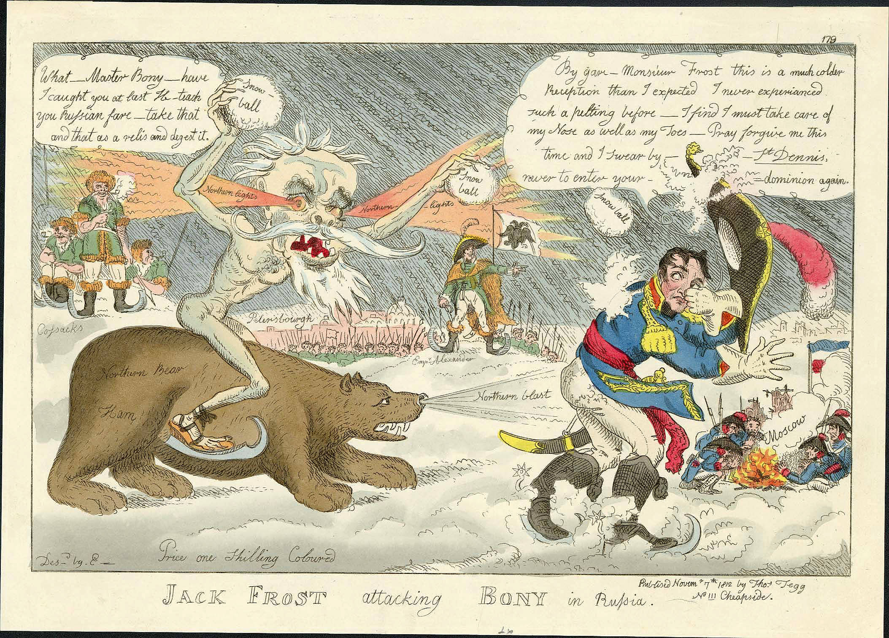
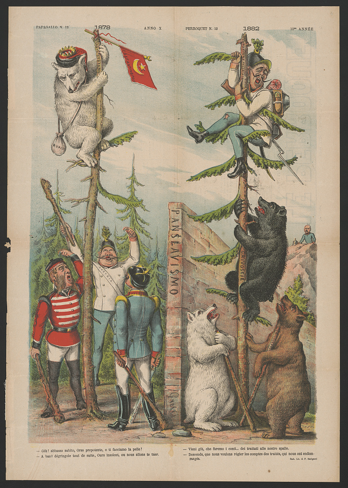
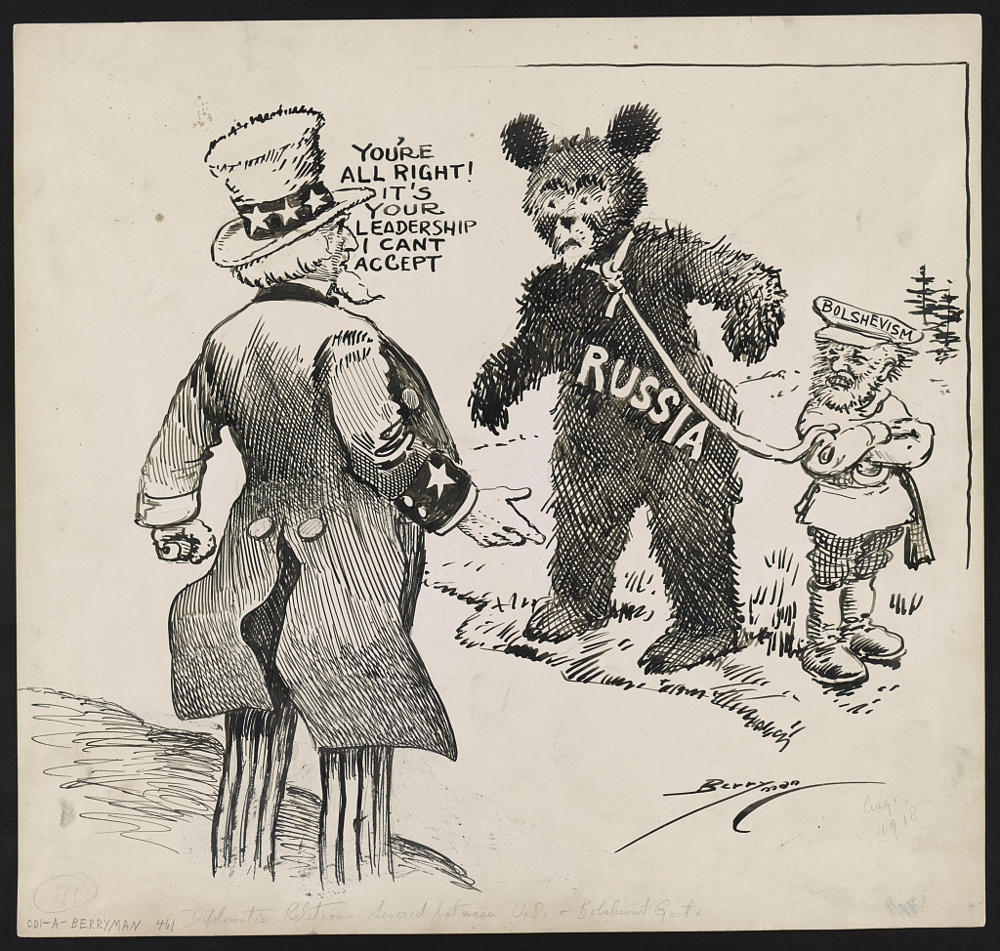

Медведица, а не медведь
Пол зверя связывает аллегорию России с Екатериной II.

Ты увидел угрозу — или художник заставил тебя её увидеть?
Аудиогид и ролик 16:9 / 9:16 выйдут отдельной поставкой после приёмки страницы. Пустые проигрыватели не показываем.
Не ищи правильный ответ. Зафиксируй первое впечатление — в конце страница вернёт его тебе.
Слева — одно огромное тело. Справа — группа отдельных фигур. До чтения подписи глаз уже получает готовое соотношение сил.
Пол зверя связывает аллегорию России с Екатериной II.
Сабля и поза всадника превращают природную силу в управляемую военную машину.
Три повреждённых копья заранее показывают британское сопротивление уязвимым.
Медведица не стоит на месте: композиция заставляет её наступать на британскую группу.
В британском листе медведица приближается к вооружённой линии.
Уже через двадцать лет тот же зверь помогает изгнать Наполеона из России.
Американский художник говорит медведю-России: проблема не в тебе, а в руководстве.
Перед нами не «портрет России», а реплика в международном споре. Неизвестный британский художник превратил Екатерину II в чёрную медведицу. На ней, словно на боевом животном, сидит Григорий Потёмкин с поднятой саблей. Навстречу выстроены Георг III и британские министры. Они вооружены копьями, но три наконечника сломаны. Уже распределение размеров подсказывает зрителю, кому приписана грубая мощь, а кому — необходимость защищаться.
Лист опубликован в Лондоне 19 апреля 1791 года. Это не вечная формула «русского характера», а аргумент конкретного момента в отношениях России и Великобритании. Художнику не требовалось объяснять внешнюю политику длинной статьёй: медведица, всадник, сабля и линия копий превращали конфликт интересов в мгновенно понятную сцену.
Почему медведь оказался удобен? Большой северный зверь одновременно означал силу, опасность, тяжесть и комизм. Эти значения противоречат друг другу — поэтому символ легко перестраивался. Поверни корпус к дому, и он станет защитником. Посади на задние лапы — получишь увальня. Направь к границе — возникнет угроза. Животное почти не меняется; меняется редакторское решение.
На стороне Британии стоят узнаваемые фигуры власти, а не безымянные солдаты. Король и министры включены в сцену как участники спектакля. За ними видны церковные фигуры. Благодаря этому лист говорит не о частной стычке, а о реакции государства. Политика выходит из кабинета на городскую витрину.
Особенно важен Потёмкин. Медведица не действует сама: ею управляет всадник. Так карикатурист соединяет Россию, монархиню и военного руководителя в единую политическую машину. Это подтверждаемая идентификация персонажей. А ощущение приближающейся опасности — уже авторская позиция, созданная масштабом и направлением движения.
«Горькая часть» — судьба самого образа. Конкретный спор XVIII века ушёл, но карикатурный приём пережил обстоятельства своего рождения. Повторение стирало дату, автора и адресата. То, что было чьим-то политическим аргументом, начинало выглядеть как будто естественный знак страны.
Однако следующие карикатуры показывают обратное: знак никогда не был неподвижным. В 1812 году медведь уже защищал Россию от Наполеона. В 1882-м снова оказывался участником европейского давления. В 1918-м американский карикатурист отделял медведя-Россию от большевистского руководства. Поэтому вопрос «что означает русский медведь?» нельзя задавать без даты, страны публикации и подписи.
Сравни не стиль рисунка, а роль зверя. Через 21, 91 и 127 лет после первого листа смысл каждый раз собирают заново.

Уильям Элмс посадил Джека Фроста на «северного медведя». Теперь зверь не нападает на Европу, а выгоняет Наполеона из России.
Исторический оригинал · Уильям Элмс · раскрашенный офорт · Public Domain
В итальянском «Панславизме» Аугусто Гросси образ включён в сложную карту европейских сил. Зверь снова становится аргументом международной политики.
Исторический оригинал · Аугусто Гросси · хромолитография · Public Domain
Клиффорд Берримен заставляет Дядю Сэма обратиться к медведю: «Ты в порядке — я не могу принять твоё руководство». Символ страны отделён от политического режима.
Исторический оригинал · Клиффорд Берримен · рисунок тушью · Library of Congress · ограничений на публикацию не известноАвтор неизвестен, поэтому вместо фиктивного издателя отвечает документированная карточка предмета. Каждый ответ отделяет установленный факт от музейного прочтения.
Это не речь исторического лица. Ответы составлены по музейной карточке предмета и указанным исследованиям.
19 апреля 1791 года; Лондон; раскрашенный офорт; Екатерина II, Потёмкин, Георг III и министры; три сломанных наконечника.
Огромный масштаб медведицы, движение к британской линии и поднятая сабля предлагают публике ощущение давления.
Сравнение ролей «защитник — увалень — угроза» помогает увидеть работу композиции. Это наш учебный инструмент, а не подпись автора.
Лев, орёл, медведь и человеческие типы позволяли превратить международный конфликт в сцену, которую можно понять ещё до чтения подписи.
Россия-медведь стала одним из самых устойчивых персонажей этой системы. Её история показывает не «характер народа», а способность повторяемого изображения пережить исходный контекст.
Одну и ту же гравюру можно превратить в призыв к сопротивлению, насмешку над паникой или урок внимательного чтения. Собери связную редакционную полосу.
Выбрано: 0 из 3
В начале ты ещё не выбрал первое впечатление.
Собери газетную полосу и пройди викторину.
Четвёртое января открывает первую главу маршрута «Русский медведь». Следующие главы будут распределены по году, чтобы образ возвращался в новом историческом контексте.
Все дополнительные изображения помечены как исторические оригиналы. Современная газетная полоса в игре отдельно обозначена как образовательная реконструкция.
Почему во время нашествия Наполеона русский медведь из угрозы превратился в защитника и союзника «генерала Мороза».
Увидеть поворот уже сейчас ↑